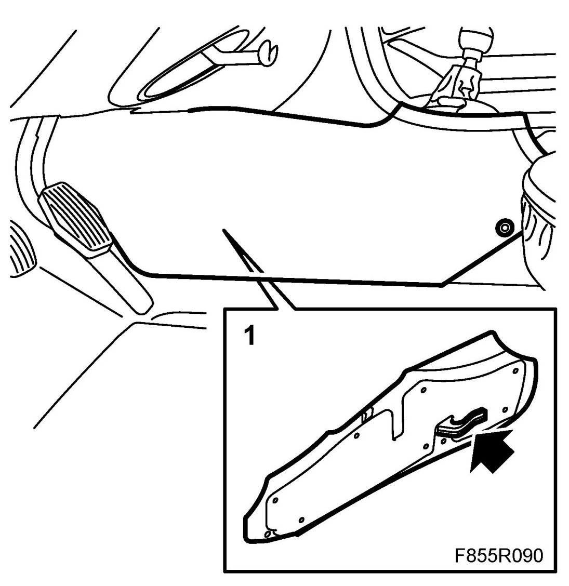
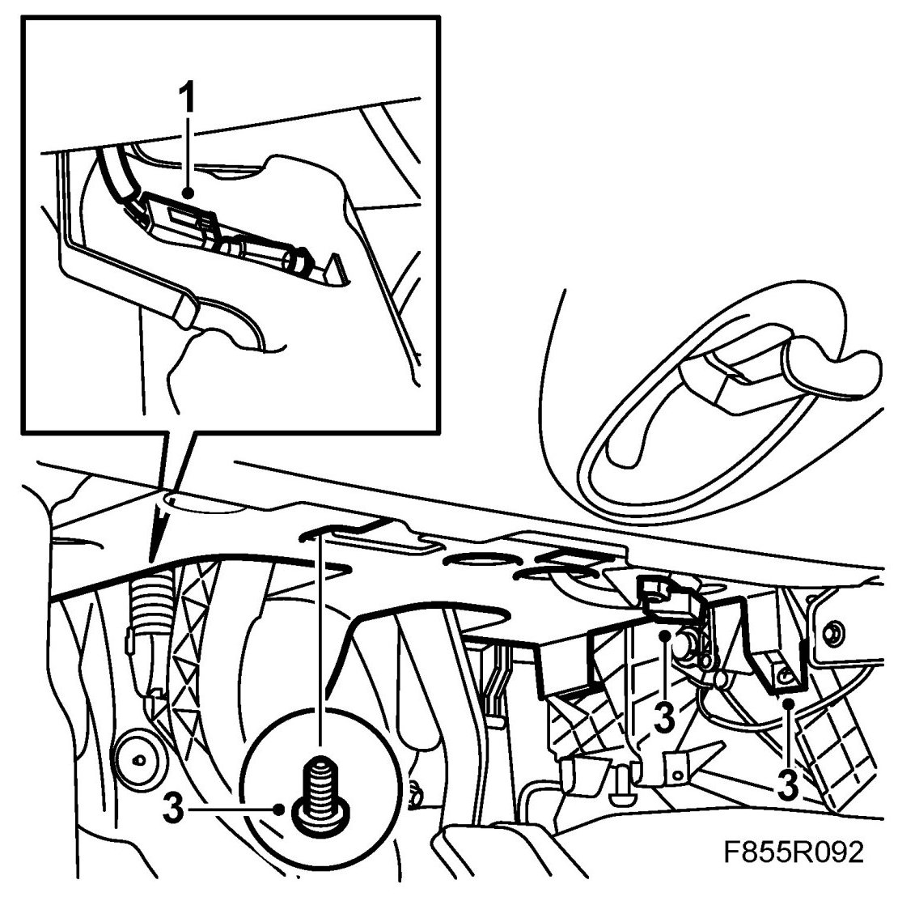
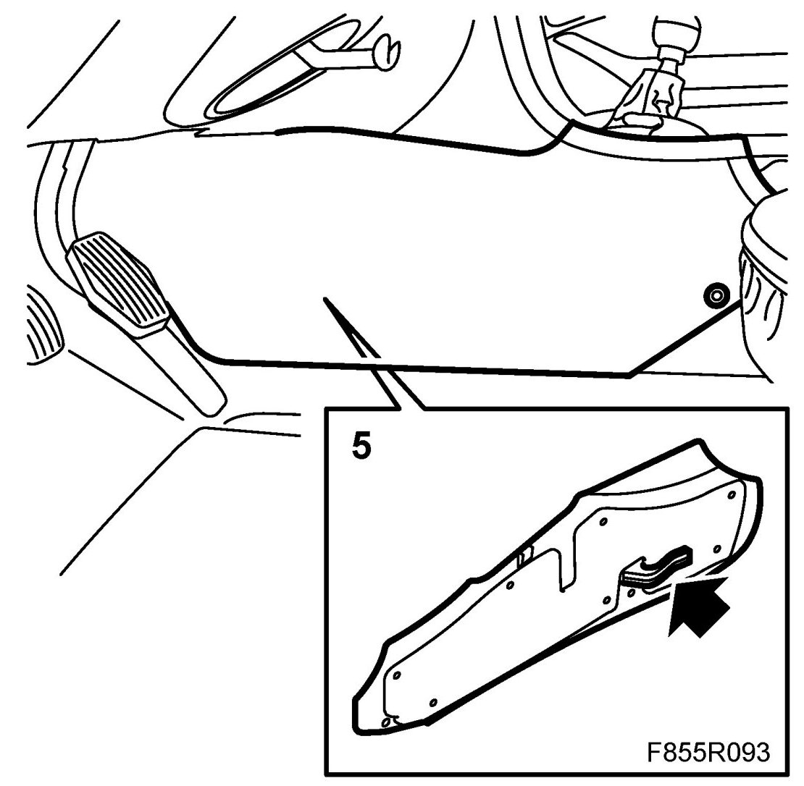

Sound Insulation Panel, Driver
Sound Insulation Panel, Driver
To remove
1. Remove the forward side panel from the centre console.

2. Remove the diagnostic socket from the sound insulation panel.
3. Remove the two screws fixing the sound insulation panel to the heating and ventilation unit and the dashboard.
4. Lower the sound insulation panel and disconnect the pedal illumination connector.
To fit
1. Reconnect the pedal illumination connector.

2. Manoeuvre the sound insulation panel up into position.
NOTE: Ensure that the locating flange on the panel is correctly positioned in the locating lugs on the heating and ventilation unit.
3. Refit the two screws fixing the sound insulation panel to the heating unit and the dashboard.
4. Refit the diagnostic socket to the sound insulation panel.
5. Refit the forward side panel to the centre console.
